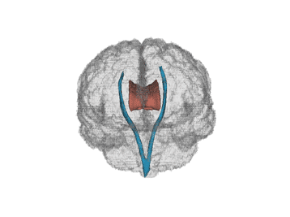
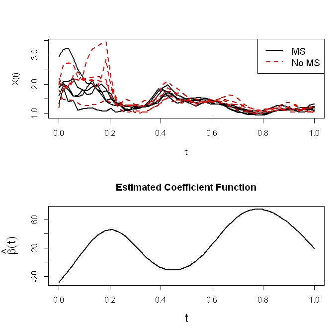
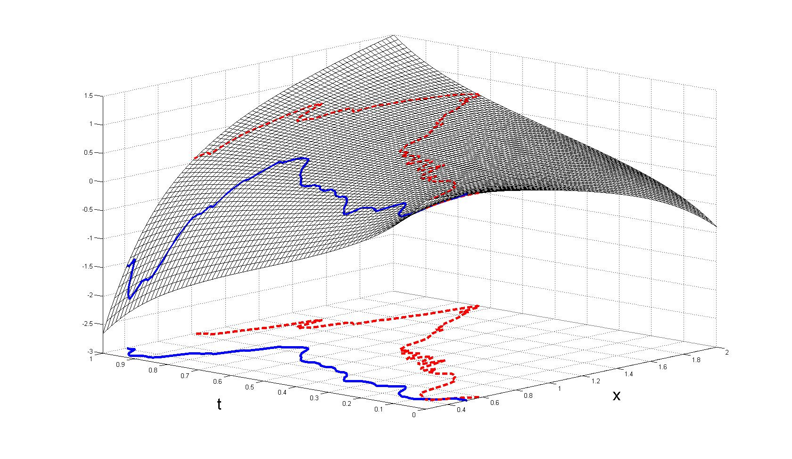
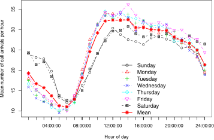
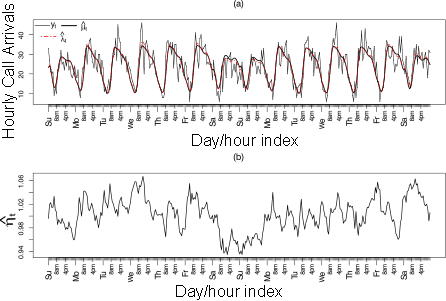
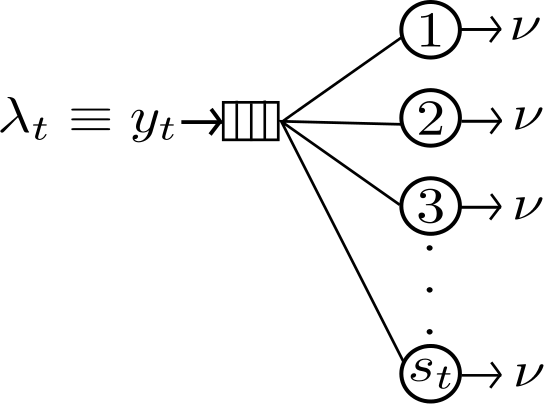

{kind=link}
{kind=link}
{kind=link}
{kind=link}
{kind=link}
{kind=link}
OPP: Other People's Papers (RSS feeds for some popular statistics journals)
All ▪ JASA ▪ JRSS-B ▪ AoS ▪ Biometrika ▪ StatSci ▪ BA ▪ JCGS ▪ Biometrics ▪ Biostat ▪ SInMed
AoAS ▪ STATCOMP ▪ JMLR ▪ EJS ▪ JMA ▪ Tech ▪ JABES ▪ JSS ▪ CSDA ▪ JSPI ▪ arXiv
Research Assistant Professor
Institute for Applied Mathematics and Computational Science
Texas A&M University
Email:
I obtained my PhD in 2013 from the School of ORIE at Cornell University
under the supervision of David Ruppert and
Giles Hooker.
I am currently working with Ray Carroll.
M. W. McLean, G. Hooker, A.-M. Staicu, F. Scheipl, D. Ruppert (to appear).
Functional Generalized Additive Models.
Journal of Computational and Graphical Statistics.
[PDF from T&F Online
| Supplementary Materials]
D. S. Matteson, M. W. McLean, D. B. Woodard , S. G. Henderson (2011).
Forecasting emergency medical service call arrival rates.
Annals of Applied Statistics,
5(2B)1379-1406.
[PDF from ProjectEuclid
| Supplementary Materials]
M. W. McLean, F. Scheipl, G. Hooker, S. Greven, D. Ruppert. (Submitted). Bayesian Functional Generalized Additive Models for Sparsely Observed Covariates.
[PDF from arXiv]
M. W. McLean, G. Hooker, D. Ruppert.
(Submitted). Restricted Likelihood Ratio Tests for Linearity in Scalar-on-Function Regression.
[PDF from arXiv]
On Generalized Additive Models for Regression with Functional Data. (2013) School of Operations Research and Information Engineering, Cornell University.
Annual Meeting of the German and Austrian Statistical Associations, Vienna, Austria (2012)
[Slides (PDF)]
ORIE PhD Colloquium, Ithaca, NY (2012)
[Slides (PDF)]
ORIE PhD Reunion / Jack Muckstadt Retirement Celebration, Ithaca, NY (2012)
[Poster (PDF)]
I am an applied statistician whose research currently focuses on using semiparametric methods to model longitudinal and functional data. My research in graduate school concentrated on functional regression. In this setting at least one of the predictors or the response are functions. I am also interested in Bayesian hierarchical modelling and problems involving missing data. Past work has involved time series analysis; specifically various types of GARCH models. Previous areas of application have included diffusion tensor imaging, forecasting emergency medical service call arrival rates, and financial time series.
Below is an introduction to a couple of applied problems I have worked on.
We have data from a study comparing certain white matter tracts of multiple sclerosis (MS) patients with control subjects. MS is a central nervous system disorder that leads to lesions in the white matter of the brain which disrupts the ability of cells in the brain to communicate with each other. Below is a human brain with two major white matter tracts, the corpus callosum and corticospinal tracts in red and blue, respectively (thanks to Jeff Goldsmith).  Using a Magnetic Resonance Imaging technique called Diffusion Tensor Imaging we obtain several measurements at each location in the white matter tracts. Here it makes sense to treat these measurements as being from a continuous function X(t) where t is location along the tract and use tools from functional data analysis. We wish to use the functions X(t) to predict a scalar health outcome Y. For example, Y might be score on a cognitive test or disease status (case or control). The typical approach in functional data analysis is to use the Functional Linear Model (FLM)
where β(t) is an unknown coefficient function that needs to be estimated and g(•) is a known monotonic function called the link function. Below is a plot of some of the curves Xi(t) as well as a corresponding estimated β(t).
 However, this model is often not flexible enough to model the true underlying relationship between the response and predictor. We propose the new model
where F(x,t) is an unknown smooth bivariate function that we estimate using penalized regression splines. The model is much more general than the FLM, but retains the ease of interpretation. Below is an example estimated surface.
 Here Y is 1 if the subject has MS and 0 if they do not and g[E(Y|X)] gives the estimated probability that subject i has MS. The red plotted curve is X(t) for one subject with MS and blue curve is for a subject without MS. We see that since the red curve traces out a higher path on the surface than the red curve, the subject corresponding to the red curve is more likely to be classified as having MS.
You may fit the FGAM and FLM yourself to several different data sets using an app I created.
In this project we are interested in determining how to best deploy ambulances in a given city to minimize response times to emergency calls while keeping costs low. More specifically, we have data on every ambulance trip and every emergency call received by Toronto EMS between January 2007 and December 2008. The operations research models that address these deployment problems require accurate estimates of the number of calls that will be received during each time period. Below is a plot of the mean number of calls per hour for each day of the week.

Methods used in practice to obtain estimates are quite ad hoc. Instead, what we do is build what is called a factor model with constraints. This provides dimension reduction, accounts for seasonal and intra-day patterns in the call arrival rate process, and lets us incorporate additional covariates. The factor model is estimated using penalized regression splines so that the factors and loading in the factor model vary smoothly over time. Using the factor model we obtain smooth estimates for the arrival process for every day of 2008 which is plotted below. As is to be expected, there is a very noticeable difference between the estimates for weekdays and weekends.

Finally, an integer-value GARCH model is fit to the residual process to account for any remaining dependence. Below is a plot of the estimated number of calls for each hour of weeks 8 and 9 of 2007 as well as a plot of the estimated integer-value GARCH model fit to the residual process.

How do we check whether our model improves staffing levels and response times?
By simulating an M/M/s queueing system where the servers represent ambulances, calls for emergency medical services in hour, t, occur at rate λt, and each ambulance services callers at rate ν. We use our model to obtain estimates of the number of callers for each period and these determine the number of ambulances to staff, say st, in each period. After fitting the model to 2007 data, to initialize are queueing system we assume the number of arrivals each hour is the observed number of calls for the corresponding hour for 2008 and simulate inter-hour arrival times and service times for each caller.

All ▪ JASA ▪ JRSS-B ▪ AoS ▪ Biometrika ▪ StatSci ▪ BA ▪ JCGS ▪ Biometrics ▪ Biostat ▪ SInMed
AoAS ▪ STATCOMP ▪ JMLR ▪ EJS ▪ JMA ▪ Tech ▪ JABES ▪ JSS ▪ CSDA ▪ JSPI ▪ arXiv
Below is a Shiny app I created that performs estimation, visualization, inference, and prediction for the functional generalized additive model (FGAM) and the functional linear model (FLM). More information on these models can be found in the Research tab and in my papers from the Papers tab. Begin by selecting a data set and choosing model parameters and an estimation method (if you are familar with penalized splines). You may also specify options for displaying the fits, conducting a hypothesis test of FLM vs. FGAM, and performing out-of-sample prediction. When you have selected the setting you want, you may fit the models by clicking the "Fit Models" button.
Packages
refund
The following functions were contributed to the refund package available on CRAN:You can run all these functions as a stand-alone package by installing the .zip file here in R.
- fgam - a wrapper for the gam function in package mgcv to fit functional generalized additive models.
- predict.fgam - wrapper for the predict.gam function in package mgcv for prediction with fgam fits.
- vis.fgam - for visualizing estimated surfaces produced by fgam.
- af - internal function for building fgam terms specified in model formulas passed to fgam.
- lf - internal function for building functional linear model terms specified in model formulas passed to fgam.
Article Supplements
- Supplementary material to "Functional Generalized Additive Models" - includes examples for fitting FGAM and code from conducting all simulations in the paper.
- Supplementary material to "Forecasting EMS Call Arrival Rates" - includes code for estimating the combined factor model and Integer-GARCH model as well as code for conducting the queueing system simulation study.
A reference manager for R
I have written some code for storing references in a data.frame in R. Adding to the data frame is done by providing a BibTeX entry such as provided by Google Scholar (note that the bibentry function in the utils package in R requires a different syntax). The code provides six functions: an add function for adding references and creating the database; a search function; a print function; a function for opening documents in the database via a doi, url, eprint number (available for biblatex), or local copy; a remove function for removing entries; and a function for returning the original BibTeX entry. Just source in RefManager.R and try the examples in RefManagerTest.R if you'd like to give it a try. I would appreciate any feedback or bug reports. I have my .Rprofile set up to automatically load my database of references and the functions for editing it into a separate environment when R starts and to automatically save the database when R closes; I can provide the code for that if you send me an email.
Cornell University
Summer 2012
ENGRD 2700: Basic Engineering Probability and Statistics, Lead TA.
Spring 2011
ORIE 4740, Statistical Data Mining, Co-Lead TA.Fall 2010
ENGRD 2700: Basic Engineering Probability and Statistics, Lead TA.Fall 2009
ENGRD 2700: Basic Engineering Probability and Statistics.Spring 2009
ORIE 3510: Introductory Engineering Stochastic Processes I.Fall 2008
ENGRD 2700: Basic Engineering Probability and Statistics.